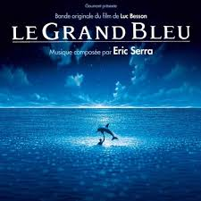

Valentin Le Blan
Student at EDHEC Business School.
Currently enjoying "Le Wagon" for 6 weeks !
Welcome on Valentin's website!
Enjoy your visit.
First of all, please click here to have a brieve idea on the future of his life.
You can find him on
Valentin's Favorites movies
|  | Le Grand Bleu est un film dramatique franco-italo-américain coécrit, coproduit et réalisé par Luc Besson, sorti en 1988. Le film est librement inspiré des vies de Jacques Mayol et Enzo Maiorca, célèbres champions de plongée en apnée. |
| Le Pari est un film français réalisé par Didier Bourdon et Bernard Campan, sorti en 1997. Il raconte l'histoire de deux cons qui essaient d'arreter de fumer. | |
| Inception , ou Origine au Québec et au Nouveau-Brunswick, est un thriller de science-fiction américano-britannique écrit, réalisé et produit par Christopher Nolan, et sorti en 2010. Il raconte l'histoire d'une bande d'amis qui faisaientt des reves etranges. |